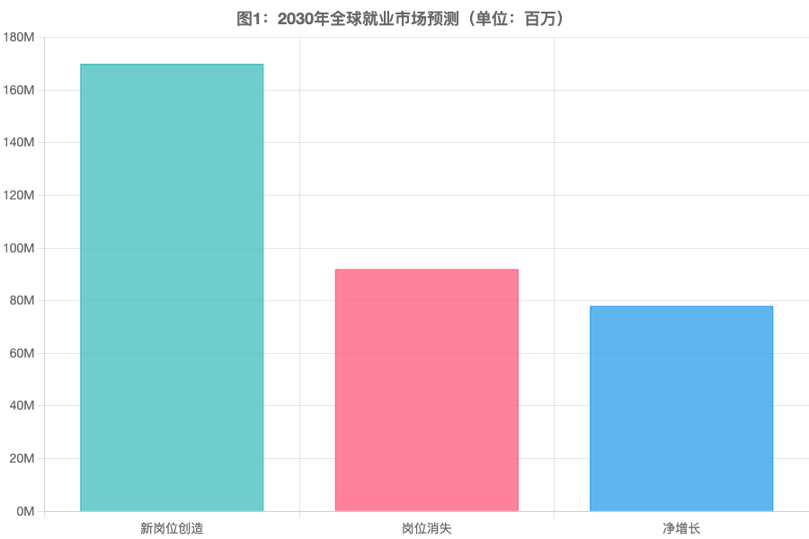
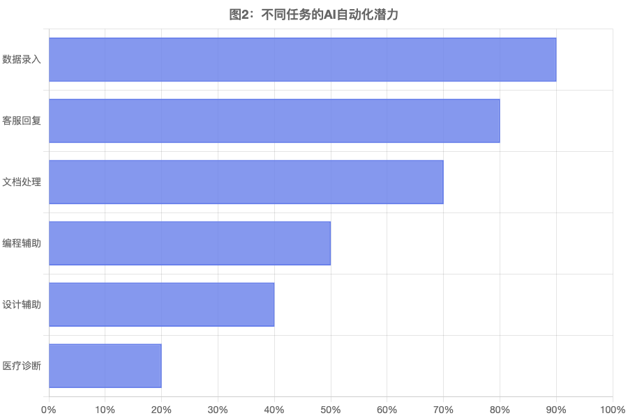
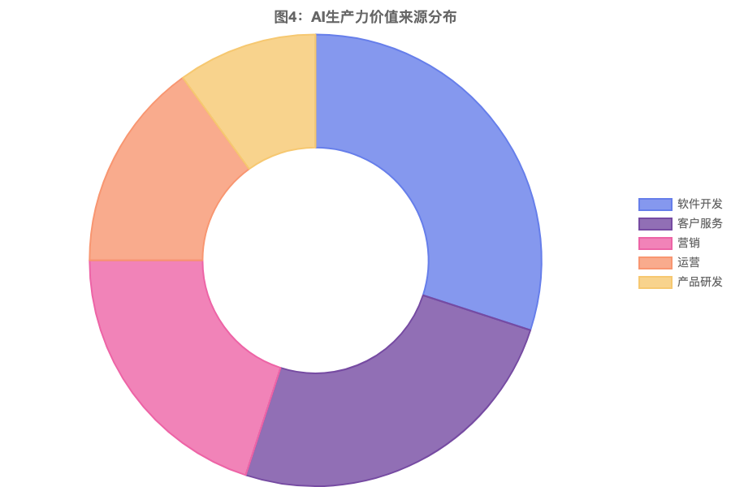
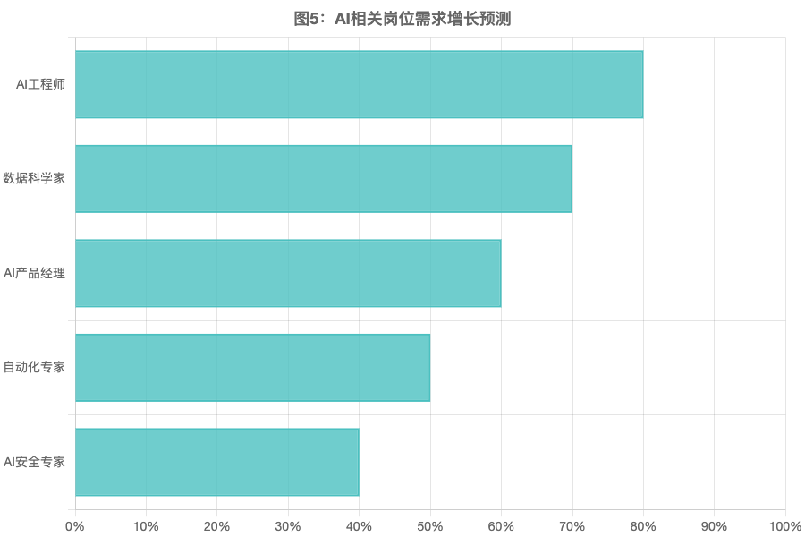
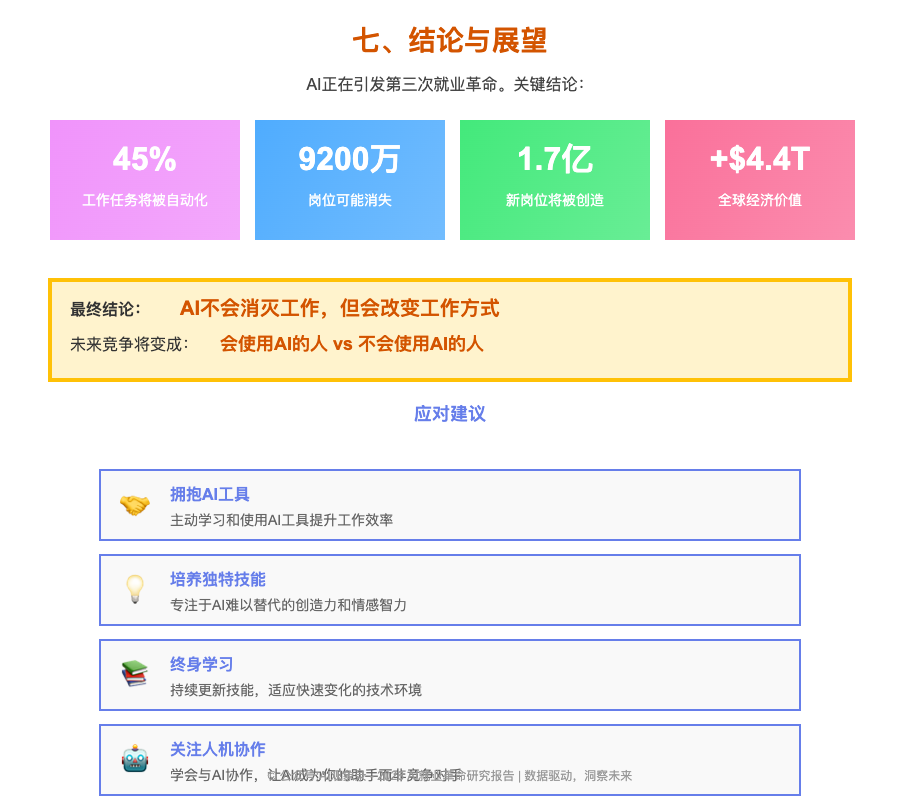

AI就业革命：2026-2035趋势报告
Artificial Intelligence and the Future of Work
2026年3月16日 | 研究报告 - 公众号:AI观象录 - 宋子鹏

一、报告摘要
过去两年，生成式人工智能（Generative AI）迅速进入商业应用阶段。OpenAI、Anthropic、Google、Meta等科技公司推出的大模型系统，使AI能够处理复杂语言、代码、数据分析以及部分决策任务。
这项技术正在引发自工业革命以来最大规模的就业结构变化。
1.7亿
新岗位将被创造（到2030年）
9200万
岗位将消失（到2030年）
7800万
就业净增长
22%
工作将被重新定义
数据来源：世界经济论坛《Future of Jobs Report 2025》，基于超过1,000家全球领先雇主企业的调研，涵盖超过1400万员工。
图1：2030年全球就业市场预测（单位：百万）

二、AI对就业市场的当前影响
AI对就业的影响已经开始显现。2024-2025年，全球科技行业因AI技术转型导致的大规模裁员引发广泛关注。
重要数据：根据Challenger, Gray & Christmas报告，2024年约有12,700个工作岗位直接归因于AI，而到2025年，这一数字上升至约55,000个工作岗位。
图2：不同任务的AI自动化潜力

三、行业冲击分析
AI对不同行业的影响差异巨大。高风险行业包括客服（60%）、行政（55%）和金融分析（50%），而医疗（15%）和建筑（10%）受影响较小。
图3：各行业AI自动化风险对比

四、AI带来的生产力革命
AI不仅改变就业，还极大提升生产效率。McKinsey估计，AI可能为全球经济带来$2.6-4.4万亿美元的价值。
图4：AI生产力价值来源分布

五、新职业出现
AI革命也创造大量新岗位。到2030年将有1.7亿个新岗位被创造，其中AI工程师（80%）、数据科学家（70%）和AI产品经理（60%）需求增长最大。
图5：AI相关岗位需求增长预测

六、未来十年趋势（2026-2035）
未来十年就业将出现三大变化：工作极化、技能升级和人机协作。到2030年，企业AI采用率将达到97%。
图6：企业AI采用率增长趋势

七、结论与展望
💡 以下关键结论使用图片格式，确保在公众号中完美显示

© 公众号:AI观象录 - 2026 AI就业革命研究报告 | 数据驱动，洞察未来